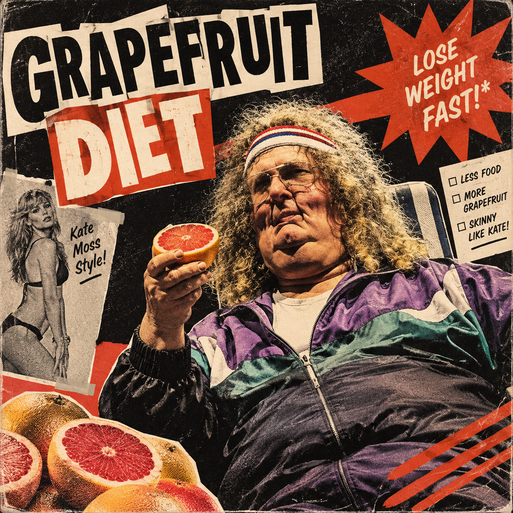

Imagem modificada com ajuda da inteligência artificial
“Grapefruit Diet” foi a quarta paródia gravada para Running with Scissors e é uma paródia de estilo de “Zoot Suit Riot”, da banda Cherry Poppin' Daddies. A música conta, de maneira bem-humorada, a história de um homem obeso que decide seguir uma dieta baseada em grapefruit, fazendo referências exageradas às suas tentativas de emagrecer e à preocupação com a aparência.
A letra também menciona Kate Moss, modelo e atriz inglesa conhecida por sua aparência extremamente magra e associada ao estilo de moda conhecido como “heroin chic”.
A inspiração da música vem de uma dieta que realmente existia, conhecida como grapefruit diet, Hollywood diet ou “10-day, 10-pounds-off diet”. Popularizada a partir da década de 1930, essa dieta prometia uma rápida perda de peso e se baseava na ideia, sem fundamento científico sólido, de que a grapefruit teria alguma enzima capaz de queimar gordura.
Steve Perry, compositor de “Zoot Suit Riot”, considerou uma honra ter sua música parodiada por “Weird Al”, embora tenha brincado que ainda não entendia completamente por que Yankovic era considerado um ícone. A combinação entre o estilo swing e ska de “Zoot Suit Riot” e o tema absurdo da dieta transforma “Grapefruit Diet” em mais uma das paródias bem-humoradas do álbum.
Who's that waddlin' down the street
It's just me 'cause I love to eat
Fudge and Twinkies and deviled ham
Who's real flabby? Yes, I am!
Every picture of me's
Gotta be an aerial view
Now my doctor tells me
There's just one thing left to do
Grapefruit Diet (Diet!)
Throw out the pizza and beer
Grapefruit Diet (Diet!)
Oh, get those jelly donuts out of here
Grapefruit Diet (Diet!)
Might seem a little severe
Grapefruit Diet (Diet!)
I'm gettin' tired of my big fat rear
Blow, fatty!
Well, I used to live on chocolate sauce
Made sumo wrestlers look like Kate Moss
Walked down an alley and I got stuck
I got more rolls than a pastry truck
When I'm all done eating
I eat a little more
When I leave a room
First I gotta grease the door
Grapefruit Diet (Diet!)
Can't have another eclair
Grapefruit Diet (Diet!)
I gotta decrease my derriere
I'm on a Grapefruit Diet
I'm on a Grapefruit Diet
I'm on a Grapefruit Diet
No more pie now
No more creme brulee
Lay off the gravy
And souffle
No french fri-yi-yies now
No ice cream parfait
Mr. Cheese Nacho
Stay away
Oh I think I'd sell my soul
For a triple patty melt
But I need a boomerang
When I put on my belt
Grapefruit Diet (Diet!)
Lay off the 3 Musketeers
Grapefruit Diet (Diet!)
Until my big booty disappears
Grapefruit Diet (Diet!)
Eat 'em till they're comin' out of my ears
Grapefruit Diet (Diet!)
'Cause I haven't seen my feet in years
I'm on a Grapefruit Diet
I'm on a Grapefruit Diet
I'm on a Grapefruit Diet
I think I'm about ready for a Quarter Pounder with extra cheese
I need a side order of onion rings
And don't forget to Super-Size that